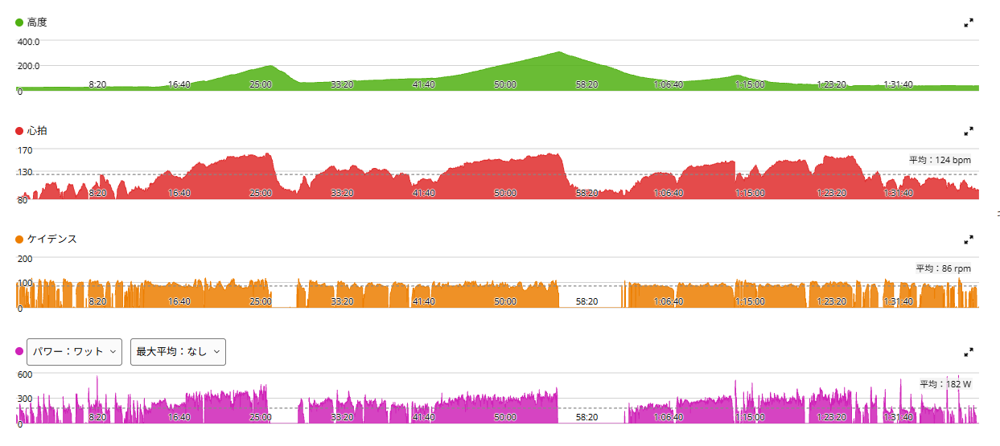

膝の様子を見ながら、唐沢と琴平へ。思ったより普通に踏めた日
今日は唐沢と琴平へ行ってきた。最近は膝の前側に違和感があって、しばらく高強度を控えている。歩いたり走ったりすると少し気になることがある一方で、自転車ではここ数日ほとんど問題なし。前日の近沢峠のグループライドでも痛みは出なかった。
とはいえ、まだ315W×5分×5本みたいな高強度をやるのは少し怖い。なので今週は「最高出力を狙う練習はやらない」と決めている。今日はその中で、「このくらいなら大丈夫そう」という強度を探りながら走ってきた。

44.26km・NP236W・TSS120.6
- 全体44.26km / 1時間38分24秒 / 獲得518m / 平均気温21.4℃
- 負荷平均182W / NP236W / IF0.860 / TSS120.6
- 心拍・回転平均124bpm / 最大162bpm / 平均86rpm
- 効果有酸素TE4.1 / 無酸素TE0.2 / 運動負荷189

唐沢は302W。膝の反応を見ながら踏んだ
- 唐沢8分21.6秒 / 平均302W / 心拍平均149bpm・最大162bpm / 90rpm
FTP設定275Wに対して約110%。普通に高い。でも今日は「全開で記録を狙う」という感じではなく、走りながら膝の反応を見ていた。結果として、ここまで踏んでも膝に痛みは出なかった。
ちなみに7月に膝の違和感が消えて高負荷に戻った7月14日、唐沢は8分28秒・302Wだった。今日はそれと同じ302Wである。
琴平は287Wで12分。FTPは少し超えた
- 琴平12分13秒 / 平均287W / 心拍平均147bpm・最大162bpm / 89rpm
こちらもFTPを少し上回るくらいで、12分以上しっかり踏んでいる。7月14日の琴平は309Wだったので、それよりは20W以上低い。高強度を控えているつもりなのに、数字だけ見ると全然軽くない。
ただ、インターバルのように限界近くを何本も繰り返すのとは違って、外で自然に上がった強度である。今の膝には、こういう「上げるけど追い込まない」くらいがちょうどいいのかもしれない。
後半もそこそこ踏んでいた
- 後半の区間5分22秒・264W / 6分28秒・245W / 4分08秒・298W
後半にも、それなりに高い区間が入っている。ライド全体で見ると、パワーはゾーン4に15分、ゾーン5以上に約19分。心拍はゾーン4に14分53秒で、ゾーン5はゼロだった。
なので今日は「膝の様子見で軽く走った日」ではなく、「思ったより普通に踏んでも膝は大丈夫だった日」という方が正しい。最近は低心拍の日が続いていたが、今日は唐沢でも琴平でも、強度に応じて心拍が自然に上がっていた。
膝の痛みは出なかった。でも「治った」とはまだ言わない
今日いちばんの収穫はここ。唐沢で302W、琴平で287W、後半にも300W近い区間。それでも膝の痛みは出なかった。ここ数日のライドでも問題はない。かなり回復してきている感じはある。
ただ、だからといって「もう治った。明日から315W×5分×5本！」とはしない。フルで踏むことにまだ少し怖さがあるのも事実である。今週はこのまま、最高出力系のトレーニングは控える。
そのうえで、「これくらいなら大丈夫そう」というラインは少し見えてきた。外で自然に250〜300Wくらいまで上がる。登りではしっかり踏む。でも限界まで追い込まない。しばらくはこの強度帯で乗りながら、翌日の反応まで見ていく。
今日やってみて思ったこと
膝に違和感が出ると、どうしても「何ワットまでなら大丈夫か」を考えてしまう。でも実際には、何ワットだったか、何分続けたか、何本やったか、翌日にどうなるか。全部まとめて見ないと分からない。
今日だけを見ると、300W前後でも痛みは出なかった。ただ、今は記録を狙う時期ではなく、「痛みなく乗れる範囲を少しずつ広げる」時期である。唐沢と琴平を走って、それでも膝は問題なし。今日はそれだけで十分だ。
次に見るポイント
- 翌朝の膝翌朝も膝前面に違和感が出ないか
- 繰り返し今日くらいの強度を数回繰り返しても問題ないか
- 日常の動き歩行やジョギング側の違和感が完全に消えるか
- 高強度315W×5分×5本などの再開は焦らない
- 復帰後「毎回全開」ではなく強度の波を作る
今週は、もう少し様子見。でも、かなり戻ってきている。